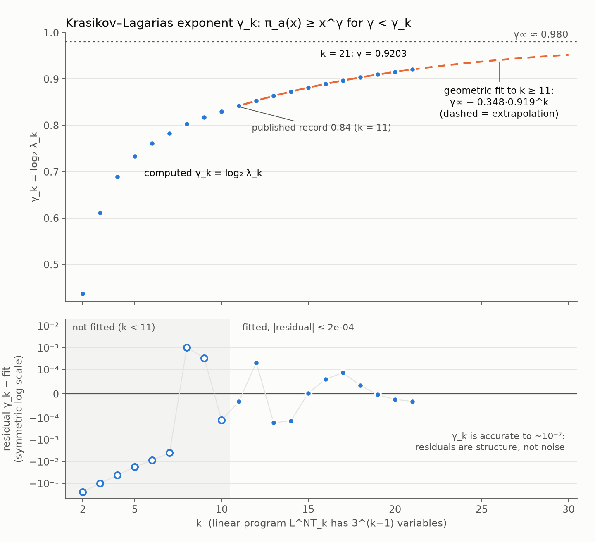

Collatz predecessor bounds: the Krasikov–Lagarias program taken to k = 22
What fraction of integers up to x eventually reach a given number under the 3x+1 map? The published lower bound was x0.84 since 2003. These notes cover how far it now goes, how we know the result is right, and what the method can and cannot deliver.
0.9251
certified exponent, k = 22
0.84
published record, k = 11
1.05 × 1010
LP variables at k = 22
Navigate with →←, jump with HomeEnd, toggle theme with T.
πa(x) = #{ n ≤ x : some T(j)(n) = a }, T(n) = n/2 or (3n+1)/2, a ≢ 0 (mod 3)
The conjecture says π1(x) = ⌊x⌋. Proving even π1(x) ≥ xγ for γ close to 1 is hard.
History of the exponent: Crandall 1978, Krasikov 1989 (3/7), Wirsching 1993 (0.48), Applegate–Lagarias 1995 (0.81), Krasikov–Lagarias 2003 (0.84).
Krasikov–Lagarias, Theorem 2.2: if a certain finite linear program LNTk(λ) is feasible, then πa(x) ≥ xγ for every γ < log2 λ, every eligible a, and all x ≥ x0(a, γ).
The mathematics is theirs. Our contribution is the computation: larger k, rigorous certificates, and a look at where the sequence is heading.
2 · The method
One variable per residue class mod 3k
Variables cm for m ≡ 2 (mod 3), N = 3k−1 of them. With α = log2 3 and c̄r = min of the three lifts of r to the next level:
m ≡ 2 (mod 9): cm ≤ λ−2 c4m + λα−2 c̄(4m−2)/3
m ≡ 5 (mod 9): cm ≤ λ−2 c4m
m ≡ 8 (mod 9): cm ≤ λ−2 c4m + λα−1 c̄(2m−1)/3, cm ≥ 1
The right-hand side is a monotone, 1-homogeneous map F. The largest feasible λ is where the cone spectral radius of F equals 1. Power iteration finds it; the bounds min and max of F(c)/c bracket it.
The three lifts share all digits but the top one. The minimum over them is where information is lost, and it is the only place.
Equations (2.13) and (2.14) of the paper print 3k where 3k−1 is meant. Their own Table 2 is reproduced only with the corrected version.
3 · Results
Eleven new levels, all certified in integer arithmetic
k
N = 3k−1
λk (numeric)
λ certified
γ = log2 λ
Δγ
11
59 049
1.7922310
published
0.8418
—
12
177 147
1.8064236
1.8064
0.8531
0.0113
13
531 441
1.8188237
1.8188
0.8630
0.0099
14
1 594 323
1.8307723
1.8307
0.8724
0.0094
15
4 782 969
1.8419687
1.8419
0.8812
0.0088
16
14 348 907
1.8522346
1.8522
0.8892
0.0080
17
43 046 721
1.8616888
1.8616
0.8965
0.0073
18
129 140 163
1.8703250
1.8703
0.9033
0.0068
19
387 420 489
1.8783132
1.8783
0.9094
0.0061
20
1 162 261 467
1.8857083
1.8857
0.9151
0.0057
21
3 486 784 401
1.8925462
1.8925
0.9203
0.0052
22
10 460 353 203
1.8988933
1.8988
0.9251
0.0048
k = 2 … 11 reproduce the paper's Table 2 to six or seven decimals. Every level also has an infeasibility certificate slightly above λk (next slides), so the numerical λk are rigorously bracketed. k = 22 was computed on a second machine (M4 Pro, 64 GB); all vectors for k = 18 … 21 were regenerated there with identical λ to seven decimals.
4 · Trend
γk against k, and why the fitted limit is not to be trusted

A geometric fit to k ≥ 11 extrapolates to about 0.98 and predicted γ21 and γ22 blind to within 10−4 (predicted 0.925, obtained 0.9251). But the successive ratios drift upward, and a geometric model with an offset, a stretched exponential and a power law fit the same data equally well while disagreeing on the limit: 0.971, 1 and 1. The data to k = 22 cannot decide whether the method reaches exponent 1.
5 · Engineering
Fitting 321 variables into 64 GB
Apple M5 GPU through MLX, float32. The map F is a single Metal kernel computing indices in 64-bit integers, so no index arrays are stored. Two vectors of memory.
Warm start from the lifted solution of level k−1 (tile three times). A secant method on log r(λ) needs three to five λ values.
At k = 21 two float32 vectors do not fit. The update is quantised to int8 relative to the previous ratio range: 1.26 vectors, 16.3 GiB peak, 1.8 s per iteration.
Vectors above 231 entries are stored as (3, N/3) because MLX shapes are 32-bit.
At k = 22 the 39 GB vector exceeds Metal's single-buffer limit (38.9 GiB on the M4 Pro). kl_split.py holds it as three buffers indexed by the top ternary digit; the int8 kernel reads all three and the lift minimum becomes min(c0[r], c1[r], c2[r]). The warm start from k = 21 is three copies of that vector, no lift through disk.
k
λ search
peak memory
certify
17
18 s
0.6 GB
0.7 s
18
145 s
1.6 GB
1.9 s
19
52 s
4.7 GB
6.0 s
20
161 s
10.6 GiB
34 s
21
948 s
16.3 GiB
124 s
22
110 min
49.0 GiB
39 min + 290 s
k ≤ 21 timings are from the M5 24 GB machine, k = 22 from the M4 Pro 64 GB (where k = 19 takes 40 s and k = 21 six minutes). k = 23 needs about 147 GiB. Memory grows threefold per step while γ grows by about 0.005.
6 · Verification
Floating point finds candidates. Only integers prove.
Integer certificate. λ = P/Q, D = 2d, q = ⌊D Q²/P²⌋, Lj = ⌊D · rigorous lower bound of λα−j⌋. The float32 vector times 2b is an exact integer C. Check Ci·D ≤ q·C4i + Lj·C̄ in int64, with overflow excluded before the check. all k = 12…22
Independent verifier.verify_cert.py shares no code with the search; rejects tampered certificates (altered C, q+1, L+1, raised λ). all k
Independent implementation.lp_check.py solves the LP with HiGHS from residues written out with Python integers. λk agrees with the paper to 10−6 for k ≤ 9, exact rational re-verification passes. k ≤ 9
Third-party verifier. Lech Mazur's Python verifier accepts our k = 18, 19 and 20 certificates in his format: 129 million, 387 million and 1.16 billion rows, no failures. k = 18, 19, 20
Proof assistant. Lean 4 via Mazur's development, native_decide on the certificate plus his formal proof of the asymptotic step. k = 18: x^0.903 provedk = 19: x^0.909 provedk = 20: x^0.914 proved
7 · Verification
Two-sided brackets: a certificate that the LP is infeasible
A feasibility certificate shows λk ≥ λ. The other direction needs no dual LP: for the monotone, 1-homogeneous right-hand side F, a positive vector C with F(C) < C strictly in every row proves that no feasible point exists.
If d ≥ 1 with d ≤ F(d), put s = max di/Ci, attained at i*. Then d ≤ sC, so di* ≤ F(d)i* ≤ s F(C)i* < s Ci* = di*. Contradiction.
certify_fast.py --upper rounds the coefficients up (q = ⌈Dλ−2⌉, Lj = ⌈D · upper bound⌉) and checks the strict reverse inequality in int64; verify_cert.py checks the direction independently. The power-iterated vector at λk + 10−5 serves directly.
k
feasible at
infeasible at
width
4
1.6122
1.61230
1e-4
11
1.7922
1.79225
5e-5
15
1.8419
1.84198
8e-5
18
1.8703
1.87034
4e-5
19
1.8783
1.87833
3e-5
20
1.8857
1.88572
2e-5
21
1.8925
1.89256
6e-5
22
1.8988
1.89891
1e-4
All k = 2 … 22 bracketed (full table in RESULTS.md). The Krasikov–Lagarias constants are now two-sided numbers: at level k the method provably cannot reach γ ≥ log2 λupper.
8 · Context
The 2026 landscape
Several AI-assisted Lean projects work on exactly this program. All are unrefereed. Their values agree with ours at equal k, so three implementations corroborate each other.
Source
exponent
k
status
Krasikov–Lagarias, Acta Arith. 2003
0.84
11
refereed, the published record
msharpe248/collatz (GitHub)
0.8676
14
Lean kernel-checked, 29 h; 0.895 at k = 17 informal
L. Mazur, ProofAtlas, July 2026
0.90, 0.901
18
Lean with native_decide, accepted on their platform
This project
0.9251
22
int64 certificates, independent verifiers, two-sided brackets; Lean theorems for k = 18, 19, 20
A record now means formally checked. Our k = 18 and k = 19 certificates are Lean theorems (x^0.903, x^0.909) through Mazur's pipeline, rebuilt on the 64 GB machine with the regenerated vectors, and k = 20 is now a Lean theorem too: x^0.914 ≤ πa(x), with the weights check taking 7382 s at 55.9 GB. k = 21 and 22 (roughly 170 and 500 GB by the same scaling) need a streamed verified checker. Every post-2003 exponent, ours included, still lives in the unrefereed tier.
9 · Context
Literature survey: what the primary sources actually say
Four researchers read the primary sources (86 cited URLs, every number tagged primary / secondary / unverified; reports/Collatz adjacent work and references.md). Corrections to things we and others had been repeating:
Applegate–Lagarias Conjecture A is positive density (πa(x) ≥ cax), not (4/3)k tree growth; those are Conjectures B, C, C′, and C′ fails for the random branching models. Their extremal tree counts stop at depth 30 and were never extended.
Hercher's m ≤ 91 used X0 = 695·260, not 268; 3·269 is only the hypothesis of his Corollary 29, which Barina's 271 (2025) makes unconditional: every nontrivial cycle has ≥ 1.4 × 1011 odd terms. A corrigendum (June 2026) leaves the result standing. Nobody has re-run the m-cycle iteration with 271 in print.
Terras's coefficient stopping time conjecture is open, but Rozier–Terracol (Discrete Math. 2026) already carry the equality check to 2.8 × 1019; a "new" computation must start past that.
No predecessor exponent for 5x+1 exists in the literature: Kontorovich–Lagarias leave the constant unspecified and predict a limit near 0.65; their branching-walk value 0.650919 is exactly the ceiling of the K–L method for 5x+1 (later slide). Our 5x+1 run is the first explicit bound.
Mazur's September 2026 "positive lower density" theorem (Codex-generated, method undisclosed, no human review) is the upstream of the neljaouh Conjecture A repository; if sound it supersedes every xγ statement. A July 2026 Lean kernel bug, exposed by an AI-assisted Collatz "disproof", argues for independent checkers and pinned toolchains with any native_decide claim.
10 · Limits of the method
λk is a function of one number
Summing all inequalities (Krasikov–Lagarias §6) gives (1 − λ−2) c̄k,k ≤ ⅓(λα−1 + λα−2) c̄k−1,k, tight on all our solutions. So λk is determined by the mixing ratio ρk = mean of the lift minima / mean of c. Exponent 1 is reachable if and only if ρk → 1.
k
1 − ρk
ratio to previous
11
0.0573
0.913
14
0.0443
0.919
17
0.0347
0.924
19
0.0298
0.928
21
0.0258
0.931
The ratio rises steadily, so pure geometric decay is wrong and the earlier limit of 0.98 was a model artefact.
Dependence of c on a ternary digit decays by a factor per digit that rises with k: 0.828 at k = 12, 0.875 at k = 19, extrapolating to roughly 0.94.
The spread max c / min c grows like 1.52k. The k → ∞ limit object is unbounded, so a limit theory must live in L¹, not among continuous functions.
A universal boundary layer: the Hölder exponent at distance d from the top digit is 0.665, 0.401, 0.293, 0.232, 0.194 for d = 1 … 5, identical for every k to three decimals. Explained to first order (boundary_layer.py): minimising ck over its top digit gives almost ck−1 (TV 0.0045 at k = 17), so the ball oscillation is the partial sum of 1 − ρk−i and the exponents are log3 of ratios of those sums: model 0.668, 0.407, 0.301, 0.243. The five numbers carry nothing beyond the 1 − ρk sequence. The defect R(Fkc) − Fk−1(Rc) is measured too (defect.py): nonnegative, mean given by the exact identity g(λk)(ρk − ρ′k), and pointwise the product of two independent argmin choices (agreement 0.332) whose size depends only on the residue mod 34. The decisive sequence is qk = (1 − ρk)/(1 − ρk−1): 0.913 → 0.931 (k = 12 … 21), rising 0.002 per level. λk is mean-field (meanfield.py): replacing the top-digit alignment bijections by random ones at every level from 9 up changes λ14 by −2·10−3 (2 % of a level's gain) and leaves qk unchanged; the arithmetic lives in the coarse residues and the weights.
11 · Dead ends
Two ways around the memory wall, both rejected on evidence
Compress c as a correction to the lifted solution. The correction is broad: median |log δ| is 0.015, but one percent of classes exceed 0.12 and the maximum is 0.66, independent of k. At the required 10−7 relative precision this needs more bits than float32. Best conceivable packing saves 25 %, not a level.
Adaptive 3-adic tree with variables only on leaves, oracle-selected cells (k = 14, share of the gain λ13 → λ14):
tree
leaves / N
gain captured
refine 10 % of cells
0.40
0.10
refine 25 %
0.50
0.30
refine 50 %
0.67
0.59
refine 25 % at random
0.50
0.17
same budget, uneven depths
0.33
−0.78
Gain is proportional to the number of variables, and at equal budget an uneven tree loses almost a whole level. The solution needs every digit in every class. Variable count is what counts.
12 · Formalisation
Reusing Mazur's Lean development instead of building our own
His certificate format is ours: 32-bit integer weights with minimum 220, λ = 2p/q, dyadic lower bounds for the three coefficients by exact integer root extraction, identical index formulas.
Weights are hex-encoded in 64 MiB chunks loaded with include_str; native_decide runs the compiled checker. The asymptotic step (Theorem 2.2) is his formal proof, with a second certificate, a termination potential, replacing the paper's König argument.
The potential depends only on k. It is the least fixed point of three difference constraints; potential.py reproduces his k = 18 payload bit for bit and produced k = 19 and k = 20 payloads that his verifier accepts.
His checker materialises a list of all residues. LoopCheck.lean replaces it with a tail-recursive loop proved equivalent, bringing k = 19 from an estimated 32 GiB down to about 8 to 10 GiB.
k
γ (p/q)
certificate
Lean
18
9032/10000
exported, verified
theorem built, axioms audited
19
9093/10000
exported, verified
theorem built, axioms audited (1819 s + 2335 s)
20
—
potential ready, LP not exported
~95 GiB
21
—
13 GB certificate
~290 GiB
Each native_decide is one CPU core for 10 to 60 minutes; k = 18 took 568 s and 818 s. Nothing here runs on the GPU. The k = 18 theorem rests on Lean's three standard axioms plus the two named native_decide checks, the same trust base as Mazur's 0.90.
13 · Lessons
Two things the formalisation taught us
Feasibility of a fixed vector is not monotone in λ. Lowering λ raises λ−2 and λα−2 but lowers λα−1. Our k = 18 vector, valid at λ = 1.8703, failed 34.8 million rows at λ = 20.903, every one of them in the class m ≡ 8 (mod 9). The vector must be re-tuned by power iteration at the target λ, which gives uniform slack. That is what the certifier does, and why its slack numbers are comfortable.
The termination certificate is combinatorial. The potential constraints involve only the index maps, never the weights, and the least solution is reached in about 23 iterations. Its maximum grows by two per level: 34, 36, 38 for k = 18, 19, 20. This means any future certificate of ours needs no new ideas on that side, only compute.
Lake 5 has no job-count flag, so the two heavy modules are built one at a time to keep peak memory at one checker's worth.
14 · Scope
What this avenue can and cannot do
Every method in this family counts predecessors. Its best possible outcome is a strong "almost all integers reach 1" statement: exponent 1 − ε, or positive density for every target in Wirsching's program.
It cannot exclude a single divergent orbit or a single unknown cycle. Cycles need Diophantine approximation; against divergent orbits there is no tool, and Tao's 2019 result leaves them as a logarithmic-density-zero set.
Conway's undecidability of generalised Collatz maps means any proof must use the specific arithmetic of 3x+1. Equivalent reformulations exist (Berg–Meinardus functional equations, the 2-adic conjugacy, termination of the Yolcu–Aaronson–Heule rewriting system) but none has traction.
Inside the program, the open mathematical target is λk → 2, equivalently ρk → 1. That is a question about the Perron vector's dependence on the top digit, more tractable than the LP itself.
15 · The cycle track
A second avenue: how long must a nontrivial cycle be?
Daniel's old CUDA idea: start from the smallest element m of a hypothetical cycle and see what minimality forces. It forces a lot: m is odd, m ≡ 3 (mod 4), no multiple of 3 lies on any cycle, the predecessor of m is 2m and its successor (3m+1)/2 is odd. The sharp tool is the product identity over the cycle:
n/k must be a rational approximation of log23 from above, so it is an upper semiconvergent of its continued fraction. With m above the verified range X0, only a few (n, k) survive. cycles.py reproduces Eliahou (1993) exactly: X0 = 240 gives n ≥ 17 087 915.
With X0 = 268 or 271 the smallest admissible pair is (114 208 327 604 steps, 72 057 431 991 odd); the next is (217 976 794 617, 137 528 045 312).
Hercher (2023) showed 3·269 suffices to exclude the first pair; Barina's 2025 verification reaches 271. So the state of the art today is a minimal cycle of 2.18 × 1011 steps.
This avenue addresses the second of the conjecture's three parts (no other cycles). The density track addresses the first. Nothing known addresses divergent orbits.
16 · Units
Bits of verification range
One bit = doubling the verified range X0 = doubling a multi-year supercomputer campaign.
Eliahou bounds the reciprocal sum Σ 1/x over odd cycle elements by k/X0, as if every element sat at X0. Any argument that the sum is at most a fraction f of that is worth log2(1/f) bits: it does the work of a larger X0.
Excluding the first pair needs 271.9 crudely. Hercher's 1.3 bits bring that to 270.6, below Barina's 271.
Excluding the second pair needs 275.4 crudely, 274.1 at Hercher's level. Successive pairs are about 3.5 bits apart.
Bound on Σ 1/x
f
gain
Eliahou, every element at X0
1
0
Hercher, analytic (Thm 27)
0.75
0.42 bits
Ours, trajectory stays above m (exact DP)
0.72
0.47 bits
Ours, residues + heights (LP)
0.77
0.38 bits
Hercher, five-week computation (Cor. 29)
0.41
1.3 bits
17 · Refinement
The weighted version: a flow LP over heights and residues
Heights. From the minimum the trajectory stays above it, so xt ≥ m·3kt/2t. The log-height dt = t − kt·log23 walks by +1 (even, only if it stays ≤ 0) or +1 − log23 (odd), and 1/xt ≤ 2dt/m. The optimal walk is greedy and gives f = 0.72.
Residues. Every predecessor of a cycle element exceeds X0, since its orbit enters the cycle. A backward path with e doublings and o odd steps gives a predecessor ≤ 2e(2/3)o z, which depends only on z mod 3D. Forward, residues mod 3D evolve deterministically; parity is free. Hercher's Lemma 9 is one such dip.
LP. A cycle is a closed walk on (height bin, residue) with odd fraction 1/log23. Maximise the mean of min(2d, c(r)) over odd steps. 175 000 states, 700 000 edges, 16 s in HiGHS.
Variant
f*
bits
residues only, D = 6
0.773
0.37
residues only, D = 10
0.768
0.38
joint, D = 7, bins 0.05
0.767
0.38
heights, exact DP
0.721
0.47
Saturation. Residue depth beyond 6 adds nothing and the two sources barely combine. The walk model is exact (any parity prefix pairs with any 3-adic residue), so this family of arguments tops out near half a bit.
18 · The gap
Hercher's extra bit, and what it would take to go further
His analytic theorem is 3/4 per odd step, 0.42 bits, slightly below our exact height bound. His remaining 0.9 bits come from a five-week case analysis on eight cores over blocks of odd and even steps, with exact linear forms like ours.
The trick we lack: a parity pattern of length j is realised only by integers in one residue class mod 2j. When the smallest member of that class exceeds the needed bound, the case is dismissed, because the elements are then provably enormous. Our LP lets the walk pick parities freely and never sees this.
A block search with our exact forms, the height and dip bounds, and the residue dismissal, run in parallel, could plausibly gain two to three bits and bring the threshold for the second pair to roughly 272 or 273. Each bit gained halves the verification work the next campaign must do.
Honest framing. This would not be a new theorem about cycles, only a cheaper route to the next convergent. The cycle frontier moves with GPU verification campaigns, and structural arguments have so far bought about one doubling. Scripts: cycles.py, cycle_harmonic.py, cycle_dip.py, cycle_lp.py.
19 · Avenues
Sixteen avenues, catalogued; several closed on evidence
#
Avenue
Payoff
Status
1
Prove λk → 2 via the limit object
theorem about the method
mechanism found
2
Stronger inequality systems at fixed k
would change the slope
closed: no gain possible
3
The 3x+d family
computations, sanity checks
two results
4
Cycle block search
bits of verification range
designed only
5
Formalise k = 20, 21
formal record
needs 30 / 90 GiB
6
Wirsching's density program
numerical test
not started
7
Divergent orbits
new theorem, no tool
no idea yet
Why avenue 2 is closed. The K–L recursion is exact except for two finite-k truncations (the infimum over a class, the minimum over lifts). Counting all paths, weighting by size or adding 2-adic residues changes nothing. And real trees, enumerated exactly for integers in the thinnest, thickest and random classes at k = 9, all grow with exponent ≈ 1 against the LP's 0.82. The thin classes are 50–200× smaller in count, same exponent. The whole gap is truncation, so avenue 2 folds into avenue 1.
Full document: AVENUES.md, with how to pick each one up.
20 · Avenue 1
Does the exponent reach 1? A mechanism, not a curve fit
Exact identity. The spectral radius of the map at λ = 2 is rk = 1/4 + (3/4)·ρ′k, with ρ′ the mixing ratio of its own eigenvector. "Exponent 1" is literally "the λ = 2 eigenvector stops caring about its top digit". The sequence 1 − rk for k = 5 … 22 shrinks by ratios rising from 0.905 to 0.924.
Injection is exactly 3/4. Tile a level-k solution to level k+1 and apply the map once: the new top digit enters only through the auxiliary term, whose mass fraction is 3/4 at λ = 2.
Amplification Ak ≈ 1.21 → 1.22. Iterating to the fixed point recirculates the variation through the ×4 term (weight 1/4). The decay ratio is (3/4)·Ak, so λk → 2 iff A∞ < 4/3.
Why A stays below 4/3. The ×4 term and the auxiliary term disagree about which lift is smallest: their argmins agree on exactly one third of the classes at every k, as if independent. The surviving fraction of recirculated variation rises 0.61 → 0.75 (k = 8 … 17) with shrinking increments, extrapolating to 0.75–0.81.
k
1 − rk
ratio
efficiency e
8
0.0897
0.854
0.614
12
0.0602
0.905
0.715
15
0.0455
0.910
0.737
17
0.0379
0.914
0.746
19
0.0319
0.919
—
21
0.0271
0.922
—
22
0.0250
0.924
—
Prediction, and the k = 22 test. The decay ratios level off near 0.94–0.97, well short of 1, so the gap decays geometrically and the exponent reaches 1. k = 22 gives ratio 0.924, still rising by about 0.002 per level: consistent, not decisive; at this rate 0.94 would be reached near k = 31. The competing offset fit (limit below 1) remains numerically indistinguishable up to k = 22. Not a proof: what a proof needs is independence of the two argmins and comparable variations in the limit measure.
21 · Avenue 16
The spectrum of the linearisation: the gap does not close
At the Perron vector the minimum in every row is attained by a fixed lift, so F is a sparse matrix J there. spectrum.py: dense spectra to k = 9, Arnoldi top-40 to k = 15, at λ = λk and λ = 2.
|λ2| is flat at 0.86–0.87 for k = 8 … 15. What grows is the density at that radius: eigenvalues within 1 % of |λ2| go from 4 to 27. A ring is filling in at a fixed radius, the finite-k shadow of the essential spectrum's edge; the band edge does not drift towards 1.
The slow modes are delocalised. The second eigenvector carries energy 0.667 on every ternary digit (the value for a vector with no digit structure) and 0.71 on the top digit; the Perron vector's profile decays geometrically from 0.38 to 0.004. λ2 is complex with a rotating argument.
Consequence. The k-dependence of the loss 1 − ρk and the slow convergence at large k are not set by the linear mixing rate. They come from the minimum: argmin switching and non-normal transients. The question λk → 2 is a question about the min, which is what the alignment mechanism on the previous slide addresses.
Traces show no usable cycle statistic: the trivial cycle's self-loop is never the argmin lift, and small closed walks in the residue graph are accidental congruences that vanish at larger k.
k
|λ2| at λk
within 1 %
|λ2|/λ1 at λ = 2
8
0.857
4
0.884
9
0.865
4
0.884
11
0.865
6
0.880
12
0.861
20
0.892
13
0.865
27
0.880
14
0.867
25
0.874
15
0.865
39
0.876
In the band picture: the top level stays isolated above a band whose edge is pinned at 0.865, so the system is not approaching a critical point through its linear spectrum.
22 · Avenue 8
5x+1: the same question with a lower ceiling
Same construction for T(n) = n/2, (5n+1)/2: principal classes a ≡ 3 (mod 5), four doublings return to a principal class, the odd predecessor (2a−1)/5 falls into one of five cases by a mod 25, minimum over five lifts. Validated by a generic residue-walking LP that reproduces Table 2 for 3x+1 to 10−6; a Metal kernel matches to 10−7.
Ceiling. Since ρ ≤ 1, the summed inequality caps λk at the smallest root of its ρ = 1 form. At ρ = 1 it factors to the Malthusian equation of the naive branching walk, 1/λ + λlog₂p − 1/p = 1. For 3x+1 the only root is 2 (γ = 1). For 5x+1 the roots are 1.5701677 and 2, so γk(5) ≤ 0.650919 for every k: exactly Kontorovich–Lagarias's η5,BP. Volkov's 0.678 is above the ceiling and unreachable by this method.
So in both systems λk → ceiling ⇔ ρk → 1, and the heuristic predicts ρk(5) → 1 too. 5x+1 is a second instance of the open question, not a known-answer calibration. At k = 14 the gap to the ceiling is 0.134 (3x+1: 0.128); the ratios of 1 − ρk rise 0.83 → 0.92, faster than for 3x+1 (0.91 → 0.93).
Lesson. Any proof of ρk → 1 must work for 5x+1 as well, which rules out arguments based on the contracting drift of 3x+1 (5x+1 expands). ρk → 1 says the deterministic residue system realises the annealed growth rate of the branching walk. A known-negative calibration would need a map whose predecessor exponent is provably below its Malthusian root; none is known. k = 15 needs a split-buffer kernel.
k
γk(5)
1 − ρk
ratio
6
0.411
0.150
0.83
8
0.449
0.113
0.88
10
0.477
0.090
0.90
12
0.499
0.074
0.91
13
0.508
0.068
0.915
14
0.517
0.063
0.919
First explicit predecessor bound for 5x+1 of this kind: πa(x) ≥ x0.516 numerically at k = 14 (not yet certified).
23 · Avenue 3
The 3x+d family: the exponent is blind to d
For Td(n) = n/2 or (3n+d)/2 with gcd(d, 6) = 1, the K–L LP is isomorphic to the d = 1 LP under m ↦ d·m′. An independently coded d-structure gives λk(d) = λk(1) to seven decimals for d = 1, 5, 7, 11, 13. The method measures tree-growth exponents, which are 1 for every d; it cannot see cycle structure or densities.
Brute-force cycle catalogue for d ≤ 29: every cycle satisfies the generalised Eliahou inequality k·log2(1 + d/(3M)) ≤ n − k·log23 ≤ k·log2(1 + d/(3m)), with the trivial 2-cycle {d, 2d} exactly on the bound.
3x+13 has seven 8-step cycles with 5 odd steps and distinct minima 211 … 319; 3x+25 has two 27-step cycles. The cycle equation m(2n − 3k) = S(v) has many solutions at one (n, k). Any cycle-search method that cannot reproduce this list is wrong.
d
cycles found
examples (n, k, min)
1
1
(2, 1, 1)
13
10
(4, 1, 1), (24, 15, 131), seven × (8, 5, 211…319)
17
3
(7, 2, 1), (31, 18, 23)
25
8
(16, 8, 7), (27, 17, 935), (27, 17, 1735)
29
5
(65, 41, 3811), (65, 41, 7055)
Minima ≤ 3 × 105; scripts kl_d.py, cycles_d.py.
24 · Next
What happens next
Lean. k = 18, 19 and 20 are Lean theorems on the 64 GB machine (k = 20: potential 5940 s, weights 7382 s at 55.9 GB; axioms: the three standard ones plus two native_decide checks). x^0.914 is the first formal record from this project, above Mazur's 0.90. Two lessons on multi-gigabyte oleans (import the big module first; pick module names whose hashed base address is free) are in the Lean README. k = 21, 22 need a streamed verified checker, weeks of work.
Write-up. A preprint draft exists (paper/draft.md): computation, certificates, brackets, formalisation, and the limit measurements with their honest verdict. Registering the certificate at ccchallenge.org and contacting Lagarias and Mazur are the owner's call.
Theory, sharpened by the spectrum. The linear gap is fixed, so λk → 2 is decided by the minimum, not by mixing: prove that the two argmins stay independent and the two variations comparable in the limit measure, which bounds the amplification below 4/3. The boundary layer and the coarse-graining defect are both reduced to the 1 − ρk sequence; the defect's structure (independent argmins, coarse size) is the mean-field assumption made exact. Random fine alignments reproduce λk and qk, so the limit question can be posed in a random K–L model with no number theory above a fixed level. A population-dynamics (cavity) version of that model reproduces why qk rises (the magnitude distribution broadens, weakening the per-level contraction) but cannot decide q∞: the loss-factor closure moves q60 between 0.95 and 0.99. In the exact vectors the weight and log-magnitude spreads grow with increments shrinking 7–10 % per level, which heuristically favours q∞ < 1.
5x+1. k = 15 with a split-buffer kernel, to compare the two 1 − ρk sequences at equal gap to their ceilings (1 and 0.6509). It is a second instance of the same question, not a known-answer calibration.
Scaling stops at k = 22 on this hardware (k = 23 needs 147 GiB). Each level now buys 0.005 in γ; the remaining value is trend data, which k = 22 has supplied.
Cycle track, optional. The m-cycle update with Barina's 271 is open in print and modest in compute; the block search with residue dismissal is designed but not started.
25 · Reference
Files and how to verify
kl.py, kl_mlx.py, kl_split.py: the map F, power iteration, secant search (NumPy, MLX, and the three-buffer version for k = 22).
certify_fast.py (with --upper), verify_cert.py, certify.py: int64 certification in both directions, independent verifier, exact rational reference.